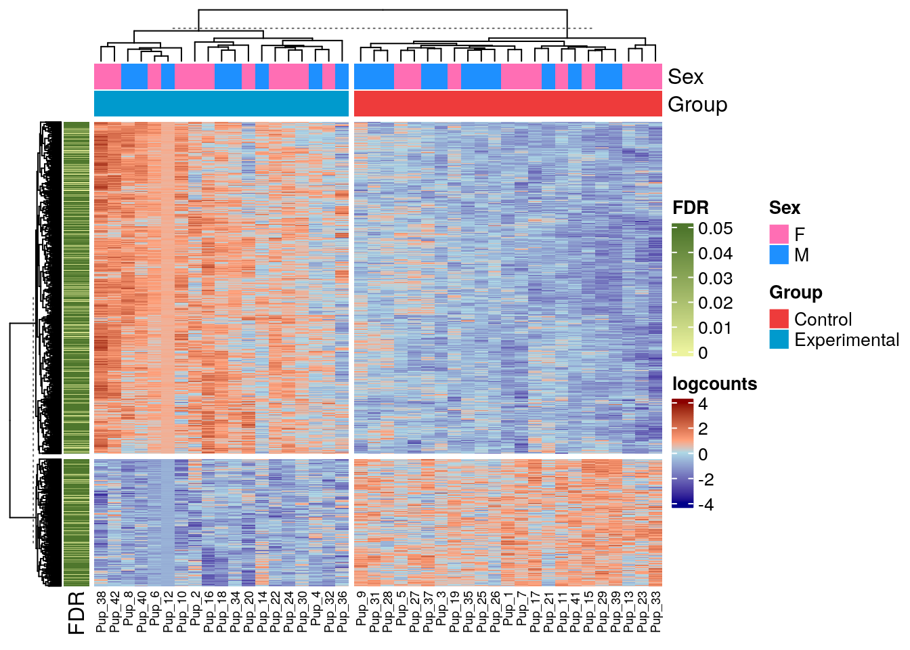

13 Expression heatmaps with ComplexHeatmap
Instructor: Renee
Congrats to @rodriguez_lion - final chapter of his PhD thesis - as well as co-1st author @mattntran, and @SubmarineGene who joined the project late, but was invaluable to getting it finished, and much thanks to @CerceoPage @lcolladotor for co-supervising!
— Keri Martinowich (@martinowk) July 3, 2023
13.1 Introduction
Heatmaps are efficient to visualize associations between different sources of data sets and reveal potential patterns (e.g. patterns of expression in your genes). There are multiple packages in R that allow you to create heatmaps, the most widely use include:
All of these are good and useful, but adding extra information to your heatmaps can get really messy depending on the package you are using.
For example, in the next heatmap we are showing the expression of marker genes in multiple cell types. The columns are separated by the group from which they are markers. Then the rows (cell types), have two different classifications: group and Population, plus a barplot that shows the number of nuclei that cell type contains.
13.2 ComplexHeatmap
The ComplexHeatmap package provides a highly flexible way to arrange multiple heatmaps and supports self-defined annotation graphics.The ComplexHeatmap package is implemented in an object-oriented way. To describe a heatmap list, there are following classes:
Heatmap class: a single heatmap containing heatmap body, row/column names, titles, dendrograms and row/column annotations.
HeatmapAnnotation class: defines a list of row annotations and column annotations. The heatmap annotations can be components of heatmap, also they can be independent as heatmaps.
Exercise 1: Explore the Bioconductor page for this package, go to the vignette and find a function that would allow you to add the barplot on the right side of the heatmap previously shown.
13.3 Heatmap with expression data
Now, we are gonna make our own heatmap with the SmokingMouse data. In this heatmap we want to see the difference of expression between both Control and Experimental for all the DEG in Pup, as well as the Sex of the samples and the FDR of the genes.
Let’s download and prepare our data first.
13.3.1 Download data
library("SummarizedExperiment")
library("ComplexHeatmap")
library("circlize")## Download and cache the file
library("BiocFileCache")
bfc <- BiocFileCache::BiocFileCache()
cached_rse_gene <- BiocFileCache::bfcrpath(
x = bfc,
"https://github.com/LieberInstitute/SPEAQeasyWorkshop2023/raw/devel/provisional_data/rse_gene_mouse_RNAseq_nic-smo.Rdata"
)
## Check the local path on our cache
cached_rse_gene
#> BFC2
#> "/github/home/.cache/R/BiocFileCache/4425565153b_rse_gene_mouse_RNAseq_nic-smo.Rdata"
## Load the rse_gene object
load(cached_rse_gene, verbose = TRUE)
#> Loading objects:
#> rse_gene
## General overview of the object
rse_gene
#> class: RangedSummarizedExperiment
#> dim: 55401 208
#> metadata(1): Obtained_from
#> assays(2): counts logcounts
#> rownames(55401): ENSMUSG00000102693.1 ENSMUSG00000064842.1 ... ENSMUSG00000064371.1 ENSMUSG00000064372.1
#> rowData names(13): Length gencodeID ... DE_in_pup_brain_nicotine DE_in_pup_brain_smoking
#> colnames: NULL
#> colData names(71): SAMPLE_ID FQCbasicStats ... retained_after_QC_sample_filtering
#> retained_after_manual_sample_filtering13.3.2 Prepare the data
## Extract genes and samples of interest
rse_gene_pup_nic <- rse_gene[rowData(rse_gene)$DE_in_pup_brain_nicotine == TRUE, rse_gene$Age == "Pup" & rse_gene$Expt == "Nicotine"]
## Extract logcounts and add name columns
logs_pup_nic <- assay(rse_gene_pup_nic, 2)
colnames(logs_pup_nic) <- paste0("Pup_", 1:dim(rse_gene_pup_nic)[2])
## Create function to remove technical variables' contributions,
## this is from jaffelab package (https://github.com/LieberInstitute/jaffelab)
cleaningY <- function(y, mod, P) {
stopifnot(P <= ncol(mod))
stopifnot(`Input matrix is not full rank` = qr(mod)$rank ==
ncol(mod))
Hat <- solve(t(mod) %*% mod) %*% t(mod)
ty <- t(y)
ty[is.na(ty)] <- 0
beta <- (Hat %*% ty)
cleany <- y - t(as.matrix(mod[, -c(seq_len(P))]) %*% beta[-seq_len(P), ])
return(cleany)
}
## Remove contribution of technical variables
formula <- ~ Group + Sex + plate + flowcell + rRNA_rate + totalAssignedGene + ERCCsumLogErr +
overallMapRate + mitoRate
model <- model.matrix(formula, data = colData(rse_gene_pup_nic))
logs_pup_nic <- cleaningY(logs_pup_nic, model, P = 2)
## Center the data to make differences more evident
logs_pup_nic <- (logs_pup_nic - rowMeans(logs_pup_nic)) / rowSds(logs_pup_nic)13.3.3 Create annotations
## Prepare annotation for our heatmap
## For this heatmap I want to be able to see the Group to which each sample belongs
## as well as the Sex of the pup
top_ans <- HeatmapAnnotation(
df = as.data.frame(colData(rse_gene_pup_nic)[, c("Sex", "Group")]),
col = list(
"Sex" = c("F" = "hotpink1", "M" = "dodgerblue"),
"Group" = c("Control" = "brown2", "Experimental" = "deepskyblue3")
)
)
## Also, I want to add the FDR associated to each gene
## Even though we do have that data, for this particular exercise we are gonna simulate it
rowData(rse_gene_pup_nic)$FDR <- sample(
x = 0:5000,
size = dim(rse_gene_pup_nic)[1],
prob = c(rep(0.0012, 1001), rep(0.00005, 4000))
) / 10000
left_ans <- rowAnnotation(
FDR = rowData(rse_gene_pup_nic)$FDR,
col = list(FDR = colorRamp2(c(0, 0.049), c("#ecf39e", "#4f772d"))),
annotation_legend_param = list(FDR = list(at = c(0, 0.01, 0.02, 0.03, 0.04, 0.05)))
)13.3.4 Plot our heatmap
## Finally, let's plot!
Heatmap(logs_pup_nic,
name = "logcounts",
show_row_names = FALSE,
top_annotation = top_ans,
left_annotation = left_ans,
row_km = 2,
column_km = 2,
col = colorRamp2(c(-4, -0.0001, 00001, 4), c("darkblue", "lightblue", "lightsalmon", "darkred")),
row_title = NULL,
column_title = NULL,
column_names_gp = gpar(fontsize = 7)
)
Exercise 2:
a) Add a barplot as a topAnnotation with the library sizes (sum) of each sample. Fill the bars with the color of your choice
b) Classify the genes according to whether they are proteing_coding or not (not_proteing_coding).